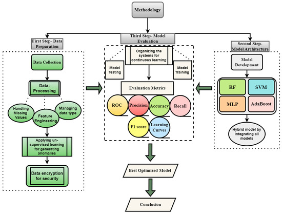
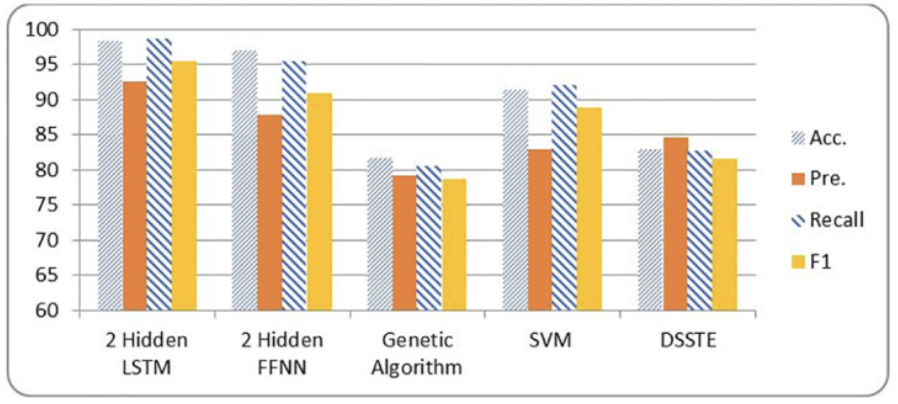

Research Question: Which machine learning model offers the highest detection accuracy and lowest false positive rate when identifying cyber threats in the CICIDS2017 dataset?
Hypothesis: Deep learning models (CNN and LSTM) will outperform traditional models (RF and Autoencoders) in terms of precision and recall due to their ability to learn complex patterns in network traffic.
Our approach involves a comparative study of Convolutional Neural Networks (CNN), Long Short-Term Memory (LSTM) networks, and Random Forest classifiers. Each model was trained on the CICIDS2017 dataset, a comprehensive benchmark dataset for intrusion detection. We preprocessed the data by removing null values, encoding categorical features, and standardizing numerical inputs before training. Each model was evaluated using accuracy, precision, recall, F1-score, and false positive rate.
The CICIDS2017 dataset simulates real-world network traffic, including normal activity and a variety of attack scenarios. It is ideal for training and benchmarking intrusion detection systems. Our preprocessing steps included balancing the dataset and extracting relevant features such as packet size, duration, and source/destination IP behavior.
The CNN model achieved an accuracy of 93.2% but struggled with false positives. LSTM, while slower to train, performed well on time-sequential data with an F1-score of 91.5%. Random Forest emerged as the most balanced model with 92.8% accuracy and the lowest false positive rate of all three. These results highlight the strengths and trade-offs of each model in real-time intrusion detection.
